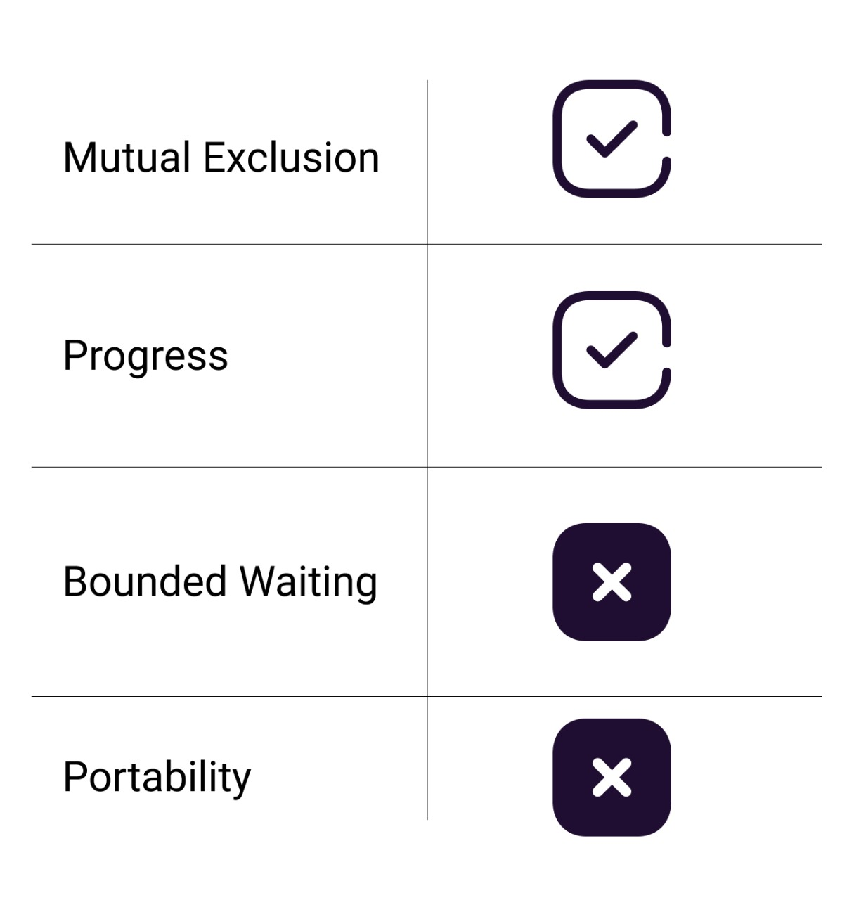

Buttons overview
As shown in the screenshot, there are two buttons, P0 and P1, representing processes P0 and P1. Pressing P0 will move process P0, and pressing P1 will move process P1.
Step 1
If you press P0, process P0 will move from the queue to the entry section. Initially, in the entry section, the lock value is 0. Upon entering the critical section, a register comes into play, and its value becomes 1. In the entry section, the values between the register and the lock are exchanged, resulting in the lock value becoming 1 and the register value becoming 0.


Step 2
If you press P0 again, process P0 will move from the entry section to the critical section. In the critical section, only one process can execute at a time.
Step 3
If you press P1, it will move from the queue to the entry section. Pressing P1 again while process P0 is already in the critical section will cause an issue because only one process can enter the critical section at a time. Since process P0 is already inside, process P1 must wait for P0 to finish. With P0 in the critical section, the register value becomes 1, causing process P1 to enter a waiting loop and preventing it from entering the critical section. The website will display an alert message indicating that process P1 needs to wait for process P0 to leave the critical section.


Step 4
When you press P0 again, process P0 will move from the critical section to the exit section. In the exit section, both the lock and register values will become 0. If you press P1 at this time, the lock value will change to 1.
Step 5
If process P1 is in the critical section and process P0 is in the entry section, pressing P0 will not allow it to enter the critical section. The register value will change from 0 to 1, causing process P0 to enter an infinite while loop, preventing it from entering the critical section. An alert message will indicate that process P0 must wait for process P1 to leave the critical section.


Step 6
Consider a scenario where processes P0 and P1 are initially in the queue. When process P0 enters the entry section, the lock value becomes 1, and the register value is 0. If process P1 also enters the entry section at the same time, the register value changes to 1. As a result, neither process P0 nor process P1 can enter the critical section, leading to a deadlock.
Step 7
When any process moves from the critical section to the exit section, the values of both the lock and register will reset to 0. This allows other processes to execute and utilize the critical section.

Analysis of Test And Set Lock
Mutual Exclusion
Mutual exclusion is guaranteed in the TSL (Test and Set Lock) mechanism because a process cannot be preempted just before setting the lock variable. Only one process can observe the lock variable as 0 at any given time, ensuring mutual exclusion.
Progress
According to the definition of progress, a process that does not wish to enter the critical section should not prevent other processes from entering it. In the TSL (Test and Set Lock) mechanism, a process executes the TSL instruction only when it wants to enter the critical section. The lock value remains 0 if no process wants to enter the critical section, thus ensuring that progress is always guaranteed in TSL.
Bounded Waiting
Bounded waiting is not guaranteed in TSL. Some processes might not get a chance for a long time, and we cannot predict when a process will definitely get a chance to enter the critical section.
Architectural Neutrality
TSL does not provide architectural neutrality as it depends on the hardware platform. The TSL instruction is provided by the operating system, and some platforms might not support it. Therefore, it is not architecturally neutral.
